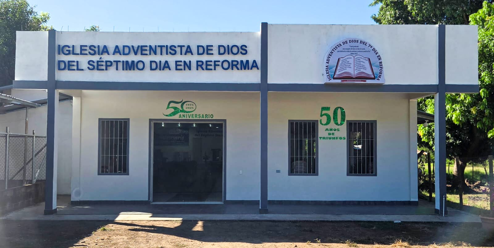

Iglesia Filial Cojutepeque
Dirección: Cojutepeque, El Salvador

Estas son algunas de nuestras iglesias filiales.
Dirección: Cojutepeque, El Salvador
Dirección: Río Frío, El Salvador
Dirección: San Miguel, El Salvador
Dirección: Zapotitán, El Salvador
Dirección: Chapeltique, San Miguel, El Salvador
Dirección: Los Guzman, El Salvador
Dirección: Apancino, El Salvador
Dirección: Sensuntepeque, El Salvador
Dirección: San Juan, El Salvador
Dirección: Boquín, El Salvador
Dirección: El Tablón, El Salvador
Dirección: San Nicolás, El Salvador
Dirección: Polorós, La Union, El Salvador
Dirección: Sesori, El Salvador
Dirección: Gualococti, Morazán, El Salvador